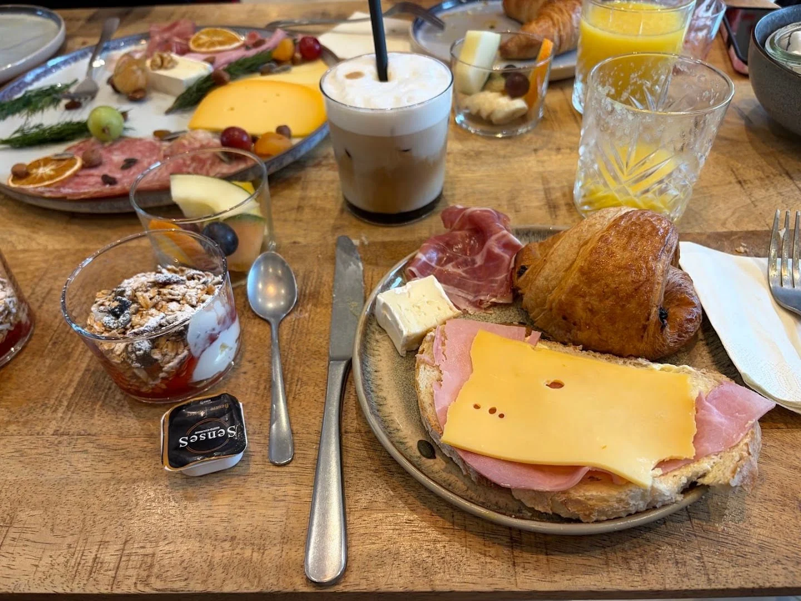
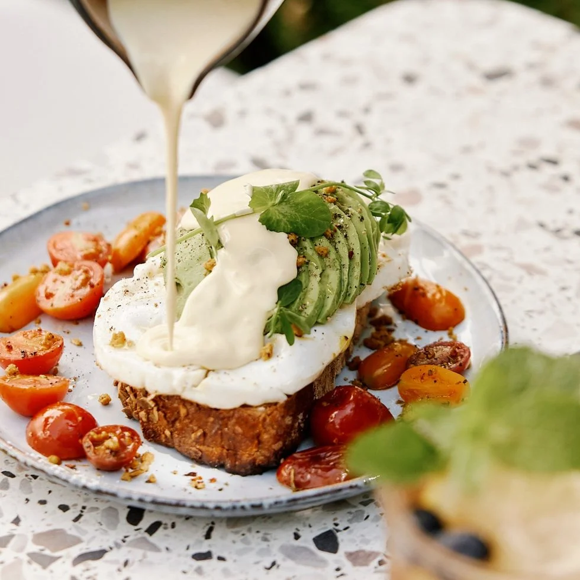
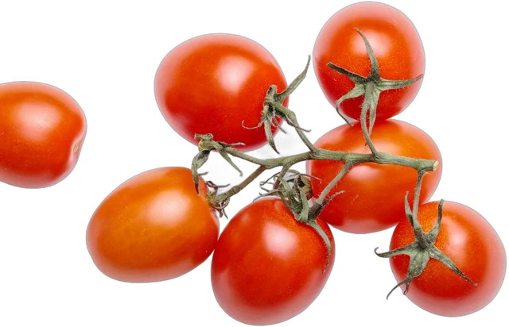
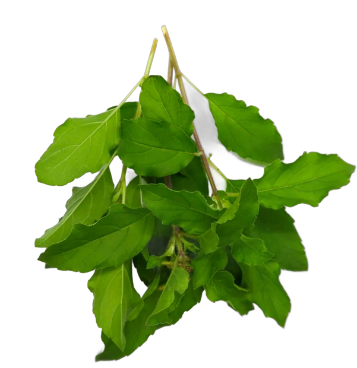
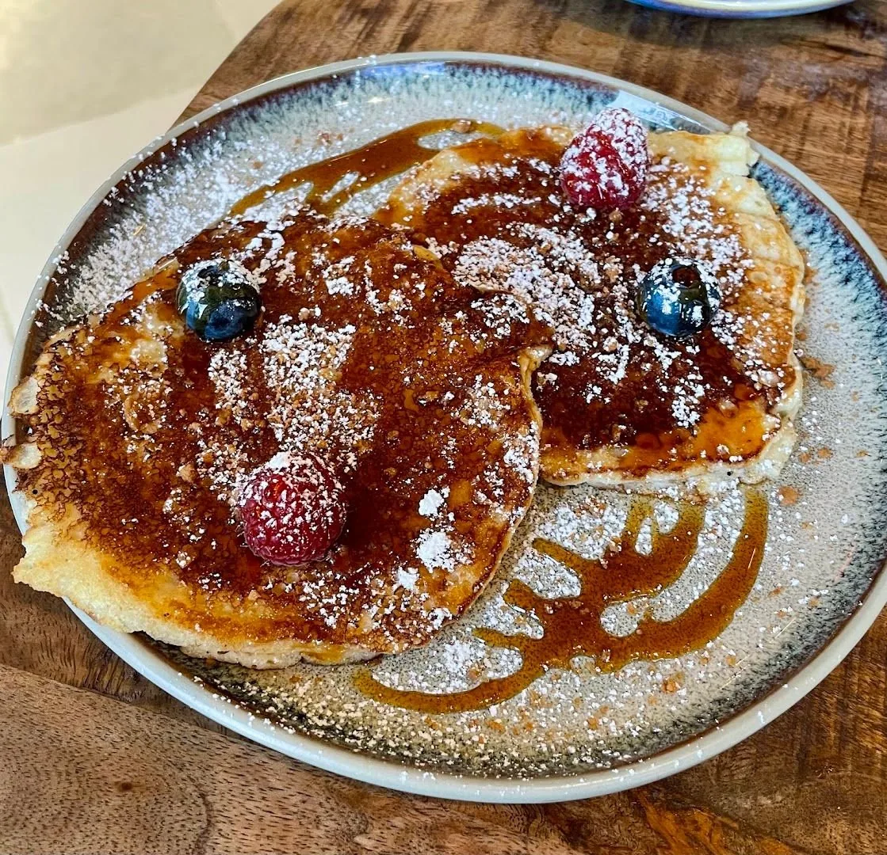
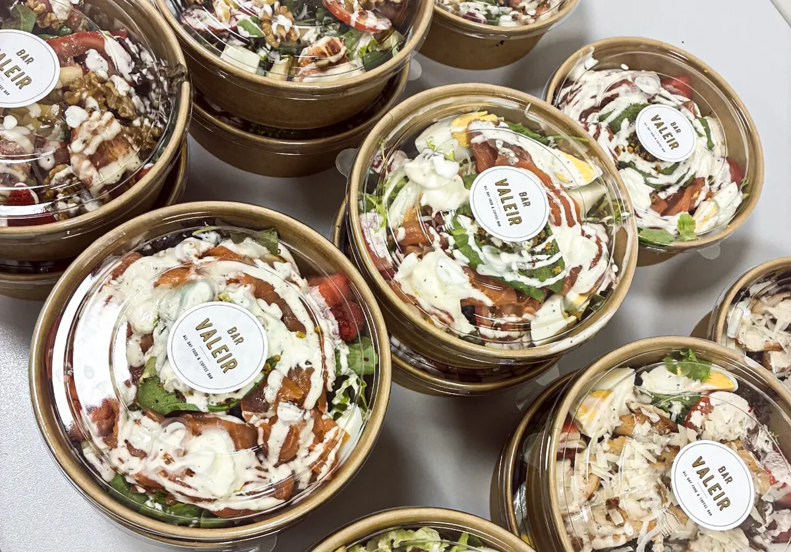
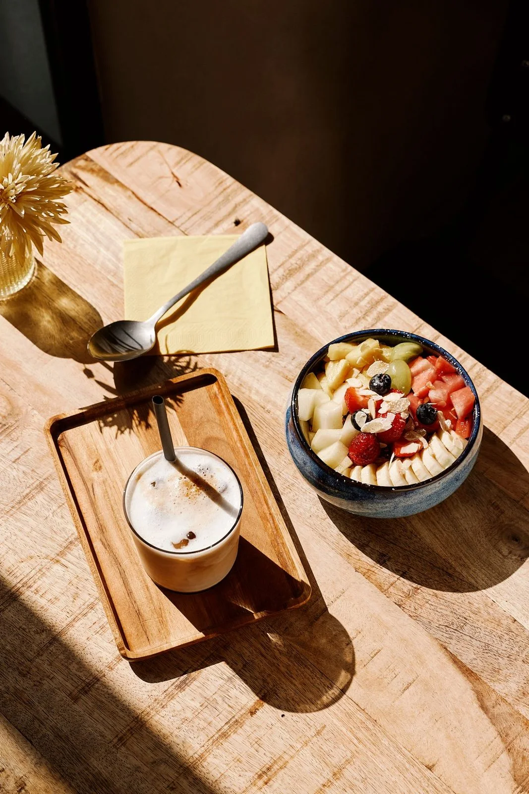
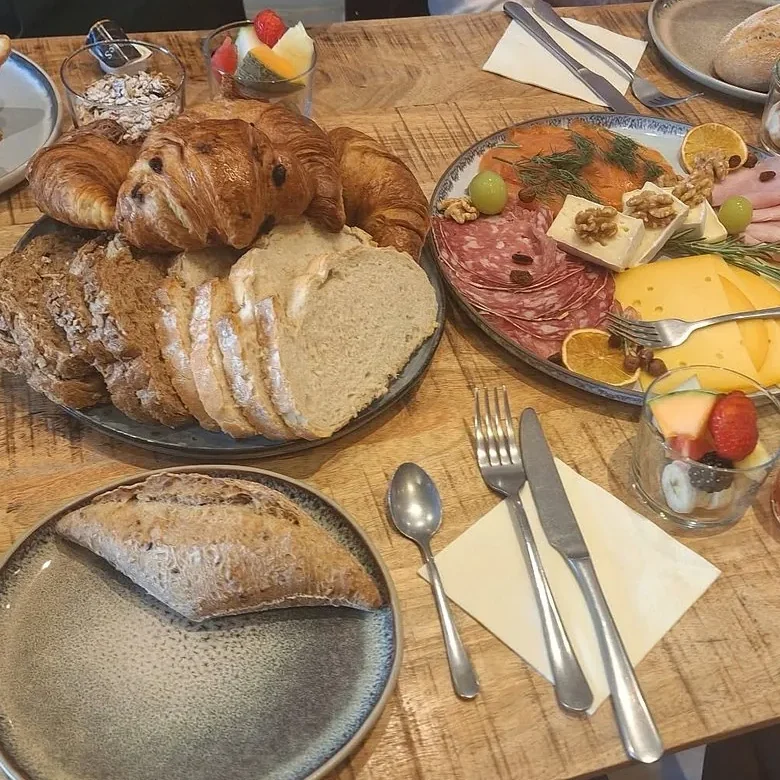
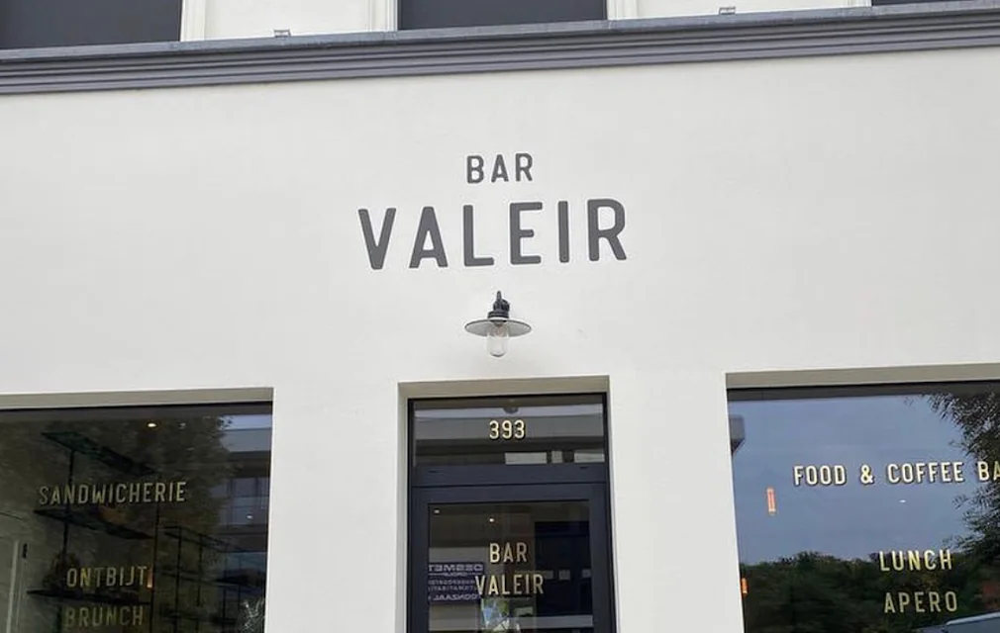
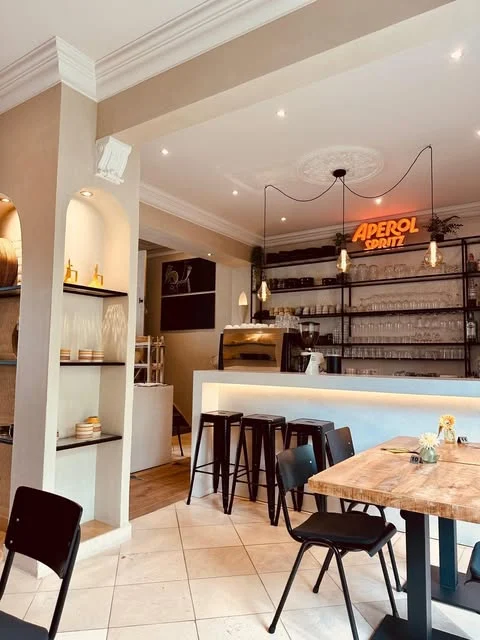

Ontbijt
Koffie of thee, verse fruitsap, een koffiekoek, brood met beleg, yoghurt met granola en vers fruit.
Valeir € 27,50€ 20
Bij Valerie en Emmeric aan de Kortrijksesteenweg in Harelbeke. Open op maandag, dinsdag, donderdag en vrijdag van 9u tot 17u. Op zondag staat het buffet klaar.



Alles maken we hier vers, en naast de vaste kaart is er altijd iets huisgemaakts van de dag.

Koffie of thee, verse fruitsap, een koffiekoek, brood met beleg, yoghurt met granola en vers fruit.

Huisgemaakt. Bijvoorbeeld met framboos, ahornsiroop en pecan, of met myrtilles, caramel en speculoos.

Salades, toasts, croques, pizzette en onze Valeir burger met truffel, BBQ of peper.

Een latte in de zon, een bowl met Griekse yoghurt, granola en vers fruit, of taart van het huis.
Lunch afhalen? Bel ons voor 11u op 0476 70 80 43.
De volledige kaart
Koffiekoeken, mini Danish, brood en pistolets met zoet en hartig beleg, Griekse yoghurt met toppings, vers fruit en een seizoenssalade. Koffie, thee, limonade en verse fruitsap staan erbij.
Kinderen tot 3 jaar betalen € 5, van 4 tot 11 jaar € 15. Enkel op reservatie. Kan je niet komen, bel dan op voorhand: wie dezelfde dag afzegt of niet komt, betaalt € 25 per persoon.


Op zaterdag of zondag zetten we de zaak helemaal voor jullie klaar. Kies ontbijt, brunch, lunch of koffie met iets zoets, en sluit af met een apero.
Doopfeest, communie, lentefeest, trouw, verjaardag, pensioen, vrijgezellen, babyborrel of teambuilding.
"Wij zijn daar geweest met een grote groep voor de eerste verjaardag van onze dochter. Super vriendelijk personeel, heel lekker en heel erg verzorgd."Anouk De Prol op Google
"Toevallig hier gestopt omdat we een hongertje hadden. Aanrader: toast zalm!"
Delfien V op Google
"Gezellige zaak waar je je meteen welkom voelt door de hartelijke ontvangst van de gastvrouw."
Marion D op Tripadvisor
"Heel fijne plek om te brunchen: mooi ingericht, zorgvuldig bereid eten en fantastische bediening."
Roel Van Hecke op Google
Overgenomen uit reviews op Google en Tripadvisor.
Kortrijksesteenweg 393
8530 Harelbeke
Bij mooi weer schuif je aan in onze zuiderse stadstuin, onder de parasols.
In de straten rondom, of op de parking aan de Sint-Ritakerk, vijf minuutjes te voet.
Reserveren voor een weekdag gaat het vlotst met een telefoontje. Voor zondag kan het ook online.
0476 70 80 43Valerie 0474 39 74 43Emmeric info@barvaleir.beMailIk maakte deze demo voor jullie om te tonen wat er kan. Na een kort gesprek maak ik er iets veel persoonlijkers van, helemaal naar jullie wens.
Vrijblijvend. Ik kom langs of we bellen.
Op maat, op jullie eigen domein.
Geen voorschot. Jullie betalen pas als alles klaar is.
Hosting, domeinnaam en kleine wijzigingen, zoals nieuwe openingsuren.
Omdat een voorbeeld meer zegt dan een mail. Zo zien jullie meteen wat er kan, en het kost jullie niets.
Nee. Het gesprek is vrijblijvend. Vinden jullie het niks, dan is het daarmee gedaan.
Na ons gesprek staat jullie site binnen 10 tot 14 dagen online.
Zeker. Jullie domeinnaam kan gewoon blijven, de nieuwe site komt in de plaats van de oude.
Nee, dat doe ik op basis van ons gesprek. Eigen foto's zijn mooi meegenomen, maar niet nodig om te starten.